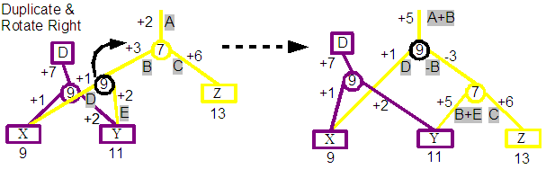

---- Document still being written ----
The implementation of the Dolphin Demo was driven out of a lack of appreciation of the features of Udanax-Gold, and definitely an understanding of how it could all be made to work. I had access to the source code released by XOC, but it was incomplete, and it's size defied easy interpretation. I found two critical papers on the @link:sunless_sea@ website that gave an overview of the Ent data structure, and the basic infrastructure for client developers.
Starting from scratch as I did with the Demo forced me to gain some understanding of the core constraints and pressures on the design, and the learning about the design from the inside. I was not intending to implement a feature-by-feature clone of Udanax-Gold, but I did want to explore the basic features of a xanalogical data server and I did want to improve my knowledge of Udanax-Gold. As I progressed through a few iterations of the application later discoveries would reveal misunderstandings made early in the project. I often just drove straight on rather than rework the effected parts. This allowed me to cover more ground, but has left some rough edges and unexplored spaces.
The majority of work on the Demo was accomplished during a two month summer holiday break during 2002. This was kindly green lighted by my employer, @link:intware@. Many thanks.
Data Structure Requirements |
The core of the implementation is a limited version of the Ent data structure at the heart of Udanax-Gold. As mentioned above this isn't a strict subset of the original design, and is more of a twisted take on it derived from my shallow interpretation.
There are a number of features that we want to be present in this structure.
Base Implementation |
The contents of a document and the structure defining the different versions and links between content are split into two layers. The Content layer holds chunks of contiguous sequences of document data. These are connected to one or more leaves of a series of binary search trees each defining a document.
The structure of the contents is built from a binary search tree whose leaves are the contents of the document. The root of the tree corresponds to one version of the document, and walking the leaves from left to right will produce the entire document. At each interior node a split integer indicates the position of the first element that can be reached by its right branch, and all elements to the left will be before this position.
To see how this works, we will step through a few revisions of a document by adding and removing content to it.

Revision A: We can start with an empty document. This is constructed from just a single root node, with no children. We indicate this root with a empty square in the diagram above on the left hand side of the diagram. The section on the right hand side indicates that the A revision of the document has no contents.
We have coloured this revision of the document gray, and labelled it as A. In the forthcoming steps we will assign a new colour and ascending letter for each revision in turn.

Revision B: We will now add some content to the document, in this case the word "One". A new root node is created that is associated with the second revision of the document. A leaf node is created, which points to the "One" string, and the leaf node is then added to the new root as its single child. The document is now considered to be at revision two.
Before continuing, you can see that our diagram still contains the first empty root node. In fact at this point we have two revisions of the same document. The first is empty, the second contains the single "One" word. The contents of each revision is indicated at the top right of the diagram, revision A is still empty and revision 2 contains the "One".

Revision C: We will now add a second word to the document, "Two", after the first. A new root node is again created, and a Split node is added as its single child this time. A split node is an internal node and does not directly reference content, instead it has two children; left and right children. An integer split value is also kept, and it defines the position of the first element of the right child. As we see in the diagram below, the round circle indicate a split node, with "One" as its left child, and "Two" as its right child. The split value of the node is shown to be the value 4. This is the position of T character of the right "Two" child. The "O" of "One" has the position 1.
One of the interesting aspects of the data structure is starting to emerge. The third revision C is uses as much of the previous revision as possible, so in this case we see that the "One" of C's "OneTwo" content is actually shared with the previous B region. The printout of the content for each revision at the top right of the diagram shows that each revision is keeping the same contents, even as further revisions are re-using some of their contents.
Revision D: We will now add a third element to the end of the document, "Three". Again a new root is created, together with a split node as its child. The right child of this split is set to the new "Three" value and a split value of 7 is stored. More interesting is that the left child of the split points to the split that we have previously created. We are now sharing content and data structures of previous revisions. This hints at possible space savings across multiple revisions of the same document.

Revision E: We will add a fourth element, "Four", but this time rather than appending to the end of the document, we will instead insert this new element between "Two" and "Three". A new root node and child split node is created. The left node connects into C's child. The right child connects to a second split which it in turn connects to the "Four" and "Three" contents. If you trace the leaf nodes from left to right starting from the E root node you will see that the desired document content is collected.

Revision F: In this case we will try to remove one of the existing elements for our next revision, in this case the word "Two". Even though our new revision shouldn't contain "Two", we want the previous revisions to still contain it. To implement this we define a new root node and child split node. The split node then connects to "One" on the left and the parent of "Four" and "Three" on the right.
Element Positions |
One issue that we have only briefly dwelled on is how to use the data structure that we have built up. The single case we have concentrated on is retrieving the entire contents of a specific revision of a document. This is achieved by walking all leafs of a tree starting from the left most one.
Another primitive operation is to retrieve an element at a specific position of a document, or a range elements from one position to another.
Looking back at revision B we can see that retrieving the element at position 1 is the character "O" (assuming 1-based number scheme). This can be found by looking at the single child of the B root, and then just a simple #at: request on the contens of that leaf node.
Retrieving the element at specified position is more interesting for revision C. Assuming we want to retrieve the character at position 5, then we can make use of the split value of the Split child of the C root. This includes a value of 4, which is the position of the first element that could be found by following its right child. So to retrieve the character at position 5, we start at the C root, find its child, see that 5 is greater or equal to the split value of 4. Follow the right branch, and knowing that the first element of the found "Two" content has a global position of 4, then we can easily find the the second character of its content, "w" is the character at the global position of 5.
Moving onto finding the character at the 5th postion of revision D, then we can follow a simple path. Starting at the D root, we can see that 5 is less than the split value of 7 for its child, which will send us down its left branch. At that point 5 >= 4 and so we end up at the "Two" leaf node again.
The more interesting case is with revision F. Again we are looking for the character at position 5. Starting at the F root, we travel to its single Spit child node, whose split value is 4. As 5 >= 4, we follow the right child, and we this time we make use of a the +3 displacement value that has been associated with the right branch. The displacement value is applied to the position 5 that we had been looking for, so that when we arrive at the end of the right branch we are now looking for the position 8 (5 + 3). As 8 < 11, we take the left most branch and retrieve the last but two character, "o".
The displacement that we applied while navigating leafwards has enabled the F revision to share the 11 sprit node from the E revision. This split node when defined for the E revision had a global position of 11, as the F revision has deleted the "Two" text before it, that nodes position within the F revision is actually 9, but changing the split value of that node would then break the E revision. By associating the displacement value with the new split node added for the F revision, we are able to share this node from E.
So the neat thing about the displacement idea is that even if we insert and delete elements, later revisions can still share split nodes from earlier revisions, even if the global positions of those nodes now differes across the numerous revision that share that node.
When walking rootwards, from leaf to root, the inverse of the displacement is applied. This enables you to learn the global position from any element in a leaf node. Those of you on the ball we will now realised that tracing a path up to a root is actually now an involved issue, because a leaf could have a number of roots. This is not a common problem with tree data structures! We will investigate this issue later.
The Demo implementation stores a separate displacement for both the left and right children of a split node. Whenever you follow either the left or right branch, the displacement is applied to the position that is being found.
The Udanax-Gold Split node implementation has a number of differences from the one described above. Rather than a simple split value, Gold has a region that defines all positions that can be found in its left children. The displacement value is stored in a DspNode, rather than embedded within the split node. As Gold supports more than integer positions, the displacement value may also be a non-integer.
Version support |
We ended off the above description of walking the nodes of a revision tree, with the issue of walking from a leaf to its root. Normally this is a very easy operation in tree data structures, assuming suitable parent references. The complexity in this case is obvious if you look at the "Three" leaf in the final diagram for revision F. The "Three" leaf node actually has two parents, one is the 7 split node associated with revision D, and the other is the 11 split node associated with revisions E and F. Which of the two parents should be followed?
For the demo each non-leaf node includes a revision number associated with the revision for which it was originally created. Whenever one walks the tree root-wards, a desired revision is also known which can be used to resolve the parent choice. So for example, if we want to learn the global position of the first character of "Three" for revision F, we want to walk root-ward from its leaf node. There are two immediate parents, the 7 or 11 split nodes. We will take the 11 split node as that node was created with revision E, which is closer to revision F than the D of the 7 split node. At this point we again have two parent choices, and the 4 split node of revision F is obviously the preferred route. At that point its single parent is the revision F root and so we have reached our destination. Applying inverse displacements we can calculate that the T of "Three" is at the global position of 8 for revision F.
A revision number is not a simple integer, but a branching number with a format such as "1:4:1". The first revision is "1", the second "2", and so on. If another revision is made from the first revision, then that is known as "1:1:1" with the next on that branch being "1:1:2".
Reviewing the diagram we can see that revision "2" has three following revisions, "3", "2:1:1" and "2:2:1". A branch is considered the path from the root revision "1" to the specified revision. For example "1", "2", "2:1:1", "2:1:2", "2:1:2:1:1" an d beyond form a branch.
We discussed earlier in this section navigating root-wards and deciding which one of possibly multiple parents should be followed. Given a desired revision we choose the parent whose created revision is closest to the revision we are interested in. The closest revision has to be on the same branch and then the nearest revision before or equal to the desired revision.
There are significant differences between the demo and Udanax-Gold in this area. Gold supports the concepts of Canopies which enable a number of features, and one of them is associating a node with all the editions that include that node. The concept of a revision number is not present, and instead the ID of the edition itself can be used. Canopies also enable faster determination of whether a node belongs to a revision or not, which for the demo would require walking root-wards a significant distance.
Tree Balancing by Splaying |
The advantage of a tree as a search data structure is that the height of the tree is O(logN), where N is the number of leaves in the tree. This feature only holds if a tree is balanced. For example in the worst case nodes form a chain from the root with children always being to the left. This will form an O(N) tree, or effectively a linked list.
The Ent appears to use the Splay Tree balancing method. This is an amortised balancing technique, and so balances a tree across a number of operations rather than after a single specific operation. This kind of balancing enables the cost of balancing to be spread out over all operations, and it can adapt to a changing pattern of accessing the tree over time.
The process proceeds by applying a splaying operation on every access to the tree; for example find, inserts and deletes. When accessing a tree, the node that is to be effected is first found, then the splaying operation will through a series of alternating rotate operations pull that node towards the root of the tree.
TODO: Individual rotate operations and big picture rotates
Before investigating the effects of rotations on displacement, a quick walk through the example tree that will be experimented on. The three trees shown above are in fact the same tree, and show three separate walk throughs, the first finding element at position 1, the second position 2 and the third position 3. The tree itself contains the string with three characters "XYZ". "X" was originally added at position 9, "Y" at 11 and "Z" at 13. The version of the document that we are now querying to only contains those three characters.
If we following the centre trace, which shows the process of finding the element at position 2. The Yellow line indicates the steps followed. Starting with a desire to find the element at position 2, we apply the displacement +4, so that we are now looking for the element at 6. The 7 split node indicates we should follow the left child, where we apply a displacement of +6, so that we are now looking for the element at 9. The 9 split node indicates we should follow the right child, where we apply a displacement of +2, so that we are now looking for the element at 11. We finally arrive at the leaf and correctly find the "Y" element. Additionally you can see that our original query for position 2 has been converted through a series of steps to a query for position 11, which is the global position at which "Y" would have been originally added to in its revision.
Thinking back to the Demo implementation of Split nodes, and you will remember that a displacement is associated with left and right children of the node. This feature is not part of standard binary search tree and so we have to resolve the impact of that.


The above diagram shows the impact of a rotation towards the right, and below that a rotation towards the left. The second example is actually a continuation of the result of the first, and so after a rotate right, followed by a rotate left, we end up with the original tree again.
If you take a closer look at the top pair of trees, the left hand tree is the before, and the right hand tree is the result of rotating the 9 split node towards the right. You can see in the result that the 9 split node is now the parent and the previous 7 parent is now the child of the 9 node. The three nodes X, Y and Z are still in the correct order, but we see that the Y leaf is now the child of the 7 split rather than the 9 split. The original tree includes a displacement for each arc, and these are labelled starting at A for +4 at the top of the tree. In the resultant tree the displacements are calculated to ensure that the positions 1, 2 and 3 will still lead to the characters "X", "Y" and "Z" respectively. The calculations are shown using the labelled displacements from the first. For example the displacement at the top of the tree is now +7 and is the result of adding the A and B labelled displacements from the original tree.
A second complexity enjoyed by the demo implementation that is beyond the trees discussed in the splaying paper, is that a node in these trees may have more than one parent. This is a very significant difference!
Imagine the tree that we used early to show the effect or the right rotation on displacements, but this time the 9 split node has two parents, one the root of its revision, and the other a split node of a later revision. If we again rotate to the right you will see that the result looks pretty much the same as before. The one difference is that the D revision root is still connected to the 9 split node. Tracing down from that root, position 1 properly matches "X", and 2 matches "Y", unfortunately position 3 now matches "Z", but that wasn't originally a member of revision D.
As a temporary solution, the demo duplicates a node if it and another node from a different revision are part of a rotation. This unfortunately means that there can be significant quantities of duplicated nodes.
TODO: Bottom up linking
Udanax-Gold use of splaying inspired the demo use of it. The details of Gold implementation are unknown to the author, but it is clearly implemented in a significantly cleaner way using a table driven mechanism. The use of canopies and separating displacement values into their own nodes feels like it might side step the mess that the Demo gets into. A closer analysis to the Gold implementation in action is going to be critical in deciding whether splaying has any value in the long term as the tree balancing algorithm.
TODO: Splay ACM reference
Insert and Delete algorithm |
The earlier discussions over the use of the tree data structure for sharing content between revisions glossed over the mechanisms for deciding what nodes need to be created and who they connect to.
The insert and delete algorithms both rely on the splaying operation to pull the nearest node root wards to one of a small number of known patterns. At that point a predefined set of mutations can be applied.
TODO: rotating around target node to top to match a small number of recognised patterns that could then be modified.
Currently the author does not know how Udanax-Gold approaches this problem.
Transclusions |
Transclusion enables the sharing of content by quoting from the original source. Transclusion is a primitive function of the implementation, which even hyperlinks are created from.
Transclusions are implemented under the covers by making use of a layer of indirection between the leaves of an Ent tree and the actual content. A content element contains a collection of parent leaf nodes belonging to possibly different document trees that it is a member of. This allows some content to belong to multiple documents, or that multiple documents quote the same content.
Reviewing the Transclusion summary from the first paragraph of this section, we see "...by quoting from the original source". In fact in the current implementation there is no distinction between the document that originally contained a reference to the content and subsequent references. A missing feature would be storing the owner of the content, which would either by the author or the owner/publisher.
TODO: Is that really true about no difference between first and subsequent references.
BeRangeElement hierarchy |
TODO: Nature and hierarchy of content classes
The Demo implementation is focused on a simple domain of contiguous integers starting from 1. The UG implementation extends the supported domain into a far more generalised coordinate-space system. The demo split-integer is instead a generic region of inclusive positions.
The Demo includes no separation between the document node tree and revision identity of those nodes. The nodes includes a revision number that indicates when that node was created. The up side of this is the simplicity and directness of the implementation. The down side is highlighted by the alternative path that UG took. The UG document nodes do not contain a revision identity, instead there is a concept of canopies that associates nodes within revisions. Additionally there does not appear to be the concept of a revision number, which has a problem with distributed generation, and instead seems to be based on the uniqueness of IDs associated with works together with works holding a list of previous revisions (? this might be a level apart and so not relevant to this ?).
The Demo probably has problems with Garbage Collection, and loosing references to document revisions and editions that are not being used. This is apparently handled by UG.
UG Ent has a different set of set of leave nodes that connect to content. The Demo does not follow the actual UG implementation due to a lack of understanding of its semantics and constraints on it.
TODO: Placeholders
Works and Editions |
TODO; Work is identity, Edition is the content
TODO: Work history
TODO: Work locking
TODO: Missing Work ownership and access control
Differences |
Endorsements |
Hyperlinks |
Considering the Demo is classified as a hypertext system, it has taken us a long time to reach a description of the implementation of the hyperlink that one would assume was a primitive operation of the software. In fact hyperlinks are implemented using transclusions. I find this particularly interesting.
TODO: show implementation
Document structures |
TODO: show how a Work and editions plus links could all fit together to from a rich document
Network |
Client Caching |
References |
The authors knowledge of the Ent data structure derives from two papers plus repeated fumbling readings of the published Udanax-Gold source code. The papers I found to be most helpful can be found at the Sunless-Sea website.